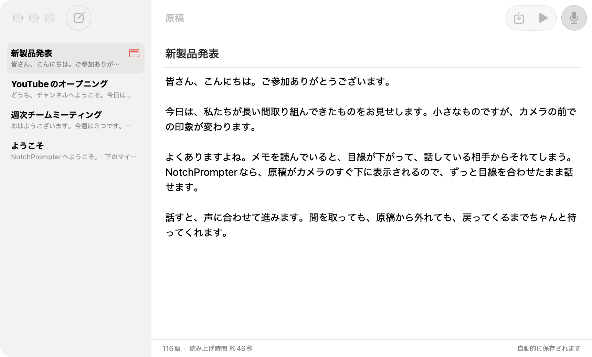
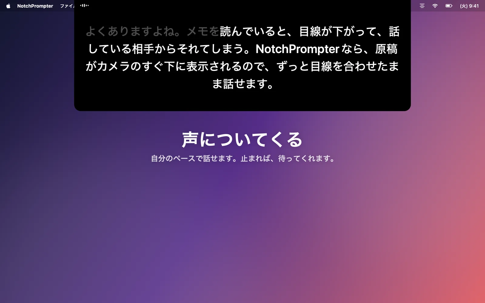
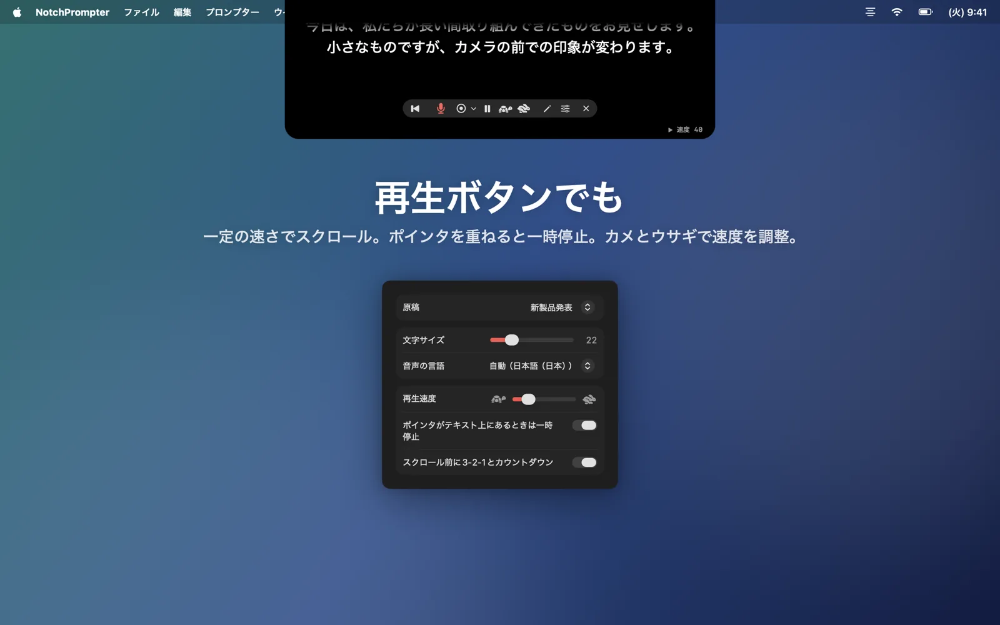
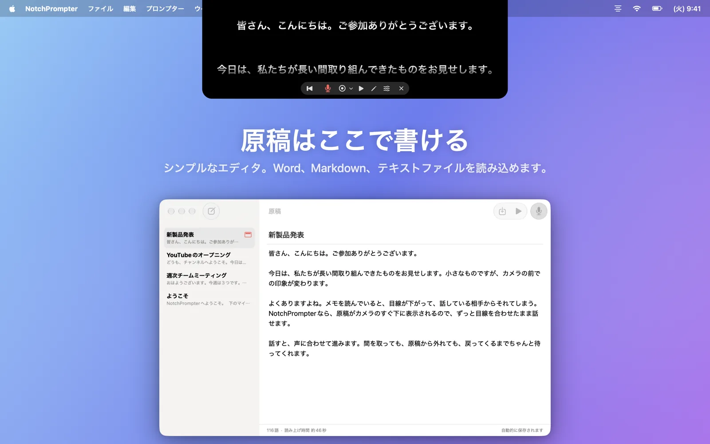
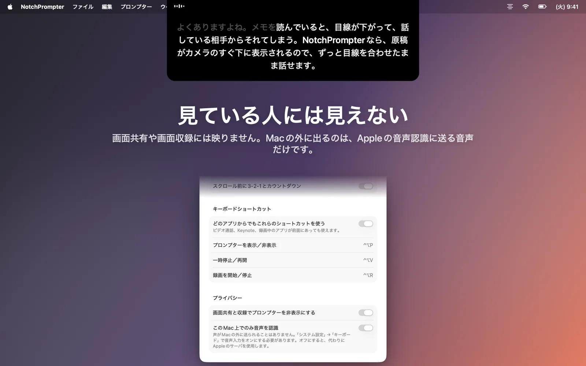
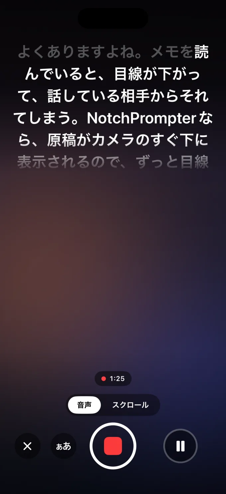

読みながら、目線はそのまま
NotchPrompterは原稿をカメラのすぐ下に表示し、声に合わせて進みます。どの言語でも、途中を飛ばしても大丈夫。すべてMac上で動作します。
無料のオープンソース。macOS 15 Sequoia以降に対応。ノッチのあるMacBookに最適で、上部にカメラがあるMacならどれでも使えます。
実際の動きを見る
読む、止まる、飛ばす。プロンプターがしっかりついてきます。
必要なものはすべて。じゃまなものは何もなし。
カメラの下の小さな黒いパネル、わかりやすいいくつかのボタン、原稿用の小さなエディタ、そして録画ボタン。
声についてくる
マイクを押して話すだけ。次の言葉はいつもカメラのすぐ下に。話し終えた言葉は薄くなっていきます。
どの言語でも、自動で
NotchPrompterは原稿の言語を判別し、その言語で聞き取ります。英語、ノルウェー語、ドイツ語、スペイン語、日本語など、数十の言語に対応しています。
飛ばしてもついてくる
文を飛ばしても、言葉を変えても、「えー」と言っても大丈夫。今どこを読んでいるかを見つけて、一緒に先へ進みます。話を止めれば待ってくれます。
再生ボタンでも
3-2-1のカウントダウンのあと、なめらかにスクロール。ポインタを重ねると一時停止し、カメとウサギのボタンで速度を調整できます。
エディタ内蔵
すべての原稿を1か所にまとめて保管、またはどんなエディタやAIアシスタントからも使えるフォルダにMarkdownファイルとして保存。Word、RTF、テキストファイルを読み込めます。
自分を録画
原稿を読みながら、カメラ、画面、またはその両方を撮影できます。各テイクは「ムービー」フォルダに保存され、字幕もMac上で作成されます。
見ている人には見えない
画面共有、スクリーンショット、画面収録には映りません。見えるのはあなただけです。
すべてMac上で動作
音声はクラウドではなく、Mac上で認識されます。アカウントもトラッキングもありません。録画はMacの中にとどまり、原稿はあなた自身のiCloudを通してのみ同期されます。
原稿はワンクリックで
プロンプターの鉛筆をクリックするとエディタが開きます。原稿を選んでマイクを押し、話し始めましょう。
- 原稿を書くか貼り付けるか、ファイルを読み込みます。
- 声で読むを押します。
- カメラを見て話します。

カメラの前で話すために
ビデオ通話、YouTube、講座、ウェビナー、ピッチに。




iPhoneでも
iPhone版NotchPrompterは、インカメラのすぐ下に原稿を表示し、声に合わせて動き、あなたを撮影します。テイクをトリミングしたり、字幕を追加したりしてから、「写真」に保存できます。
無料で使えます。透かしもなく、テイクの回数にも制限はありません。プロンプター、「声に合わせる」機能、収録、トリミング、字幕はどれも無料です。制作を応援したい方は、Proを購入できます。Proでは1080pと4K、音楽、ナレーション、その他の編集ツールが加わり、月ごと、年ごと、または一度きりの買い切りから選べます。
iPhoneアプリはオープンソースではありません。Macアプリと同じオープンソースの音声エンジンを使っており、Proの売上はMacアプリを無料に保つ助けになります。まもなくApp Storeで公開予定です。iOS 18以降に対応。

よくある質問
本当に無料ですか？
はい。Mac版NotchPrompterはMITライセンスの無料のオープンソースです。広告もサブスクリプションもアカウントもありません。ソースコードはGitHubで公開されていて、バグの報告や機能の提案、開発への参加もできます。
iPhone版NotchPrompterも無料で使え、透かしも入りません。プロジェクトを応援したい方は、動画と編集のツールが増えるProを購入できます。詳しくはこちら。
ノッチがなくても使えますか？
はい。ノッチのないMacでは、プロンプターは画面の上端、メニューバーのすぐ下に表示されます。そこもカメラのすぐ近くです。
音声追従はどの言語に対応していますか？
英語、ノルウェー語、ドイツ語、フランス語、スペイン語、中国語、日本語など、数十の言語に対応しています。NotchPrompterは原稿の言語を判別してその言語で聞き取るので、何も設定する必要はありません。別の言語は設定で選べます。
画面を共有すると、プロンプターは相手に見えますか？
いいえ。デフォルトでは、画面共有、スクリーンショット、画面収録には映りません。表示したい場合は、設定でオフにできます。
クラウドに送られるものはありますか？
いいえ。音声はMac上で認識され（システム設定で音声入力がオンの場合）、NotchPrompterにはサーバがありません。音声追従が音声を保存することはありません。テイクはあなた自身の「ムービー」フォルダにのみ保存されます。iCloudを使っている場合、原稿はあなた自身のiCloudアカウントを通して同期されます。プライバシーポリシーもお読みください。
キーボードショートカットは？
プロンプターをクリックしてから：スペース 再生/一時停止、V 音声、C 録画、R 先頭に戻る、↑ ↓ 速度、+ − 文字サイズ、E エディタ、Esc 停止。
どのアプリでも：⌃⌥P プロンプターを表示または非表示、⌃⌥V 一時停止または再開、⌃⌥R 録画。